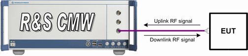

Tests without USB Interface
The equipment under test (EUT) is connected to one of the bidirectional RF COM connectors at the front panel of the R&S CMW. No additional cabling and no external trigger are needed. The input level ranges of all RF COM connectors are identical.
The bidirectional RF connection between the tester and the EUT carries both the downlink and the uplink signal.
- For BR and EDR, the R&S CMW implements a master or a slave device.
The master R&S CMW performs inquiry and paging, connect / connect test mode operations, representing the piconet master. Inquiry scan mode and page scan mode are not supported.
The slave EUT must be brought to page scan mode while the master R&S CMW is paging to make a connection possible. Inquiry scan mode is a prerequisite for being discoverable but not required for establishing a connection.
The slave mode of R&S CMW is only possible if operating mode is set to "Profile", see "Operating Mode, Profile". The slave R&S CMW becomes discoverable and expects the EUT to connect as a master. Some EUTs require to be connected to the R&S CMW in advance, in order to store a pairing information before connecting as a master. - For LE, the R&S CMW supports the Rx PER measurement. The test is started manually at the EUT. The R&S CMW sends several test packets to the EUT.
See also: "RF Connectors"

Test setup without USB interface